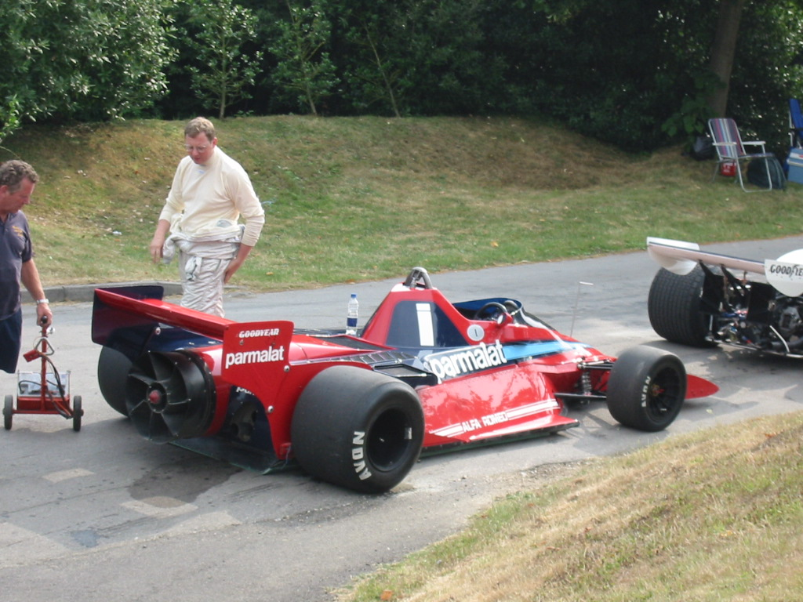
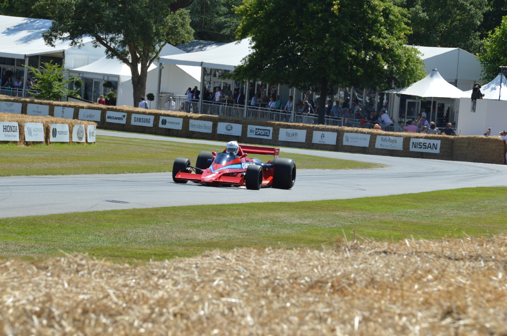
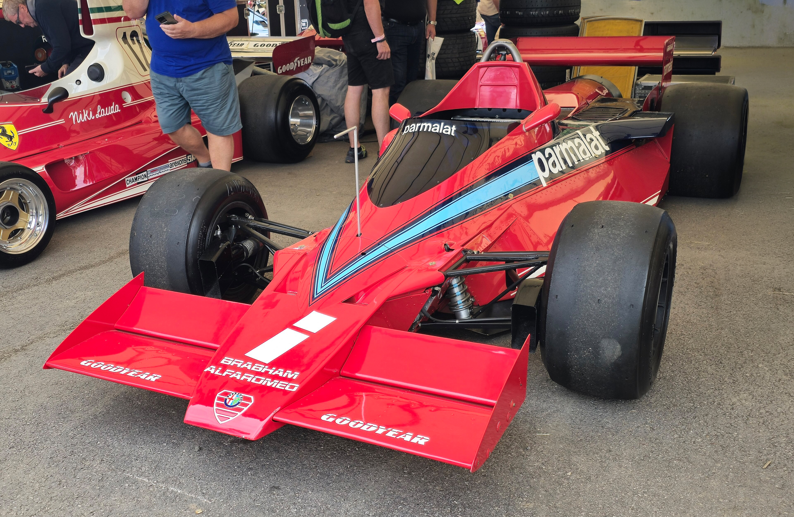

Five parts. Several angry team principals. Now on Etzi.
DRS Actuator | Brabham Fan | F2002 Chassis | McLaren Pedal | Macarena Wing
R 125 000
Demo stock available: 1 item

Brabham BT46B viewed from the rear, with its large fan visible. Photo: edvvc. CC BY 2.0. Picture source.

The BT46B driving at Goodwood, 2017; whole-car context. Photo: Ian Jones. CC BY 2.0. Picture source.

The BT46B on display, viewed from the front; whole-car context. Photo: Calreyn88; image editing and retouching by Auge=mit. CC BY-SA 4.0. Picture source.
The 1978 Brabham BT46B carried a large engine-driven fan at the rear. It drew air from underneath the car to help produce downforce and improve grip.
Niki Lauda won the 1978 Swedish Grand Prix in the fan car. Brabham then voluntarily withdrew it. The fan makes this one of the most recognisable engineering oddities in our catalogue.
Read the technical background.
| Information | Details |
|---|---|
| Team | Brabham |
| Car | BT46B |
| Year | 1978 |
| System | Engine-driven rear fan |
| Purpose | Draws air from beneath the car to help generate downforce |
| Product code (demo) | ETZI-002 |
| Price (demo) | R 125 000 |
| Stock (demo) | 1 item |

.jpg){kind=link}